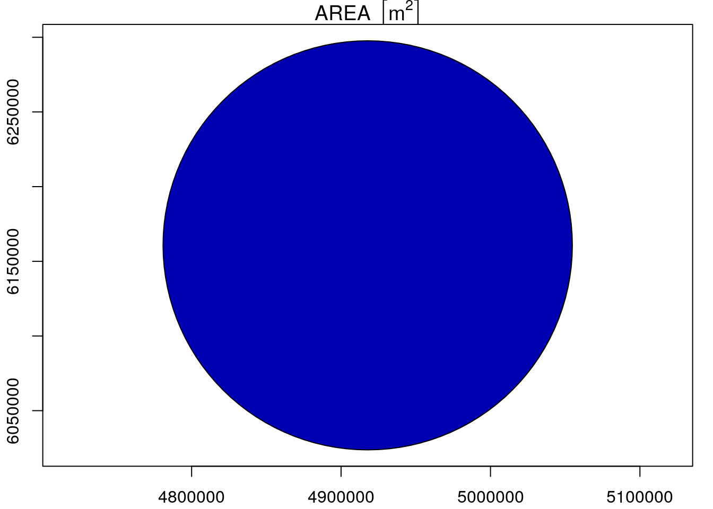

Chapter 5 Estudios de series de tiempo para asociar salud y variables ambientales
Uno de los metodos mas validados y establecidos para identificar asociaciones entre mortalidad, morbilidad, y otros parametros con variables ambientales son las series de tiempo.
Algunos de los autores clasicos sobre este tipo de estudios estan:
- Francesca Dominici [link google scholar]
- Luis Cifuentes [link google scholar]
- Petros Koutrakis [link google scholar]
- Paulo Saldiva [link google scholar]
- Michelle Bell [link google scholar]
- Antonela Zanometti [link google scholar]
Francesca Dominici ha publicado diferentes estudios y actualizado la metodologia de estudios de series de tiempo considerando la distribucion estadistica, control de los factores de confusion y modelos generales aditivos.
5.1 Distribucion
Los estudios de series de tiempo consideran en general variables diarias. En este sentido, las variables de salud son conteos diarios con una distribucion apropiada, generalmente Poisson o Binomail Negativa, por ejemplo. Estas son diferentes de la distribucion normal.
Densidad de la distribucion de Poisson:
\[\begin{equation} p(x) = \lambda^x exp(-\lambda)/x! \tag{2.12} \end{equation}\]
Densidad de la distribucion de Normal:
\[\begin{equation} f(x) = 1/( (2 \pi) \sigma) e^-((x - \mu)^2/(2 \sigma^2)^0.5 ) \tag{5.1} \end{equation}\]
Vamos a ver un ejemplo:

5.2 Efecto de la contaminacion
Dominici presento el modelo semi-parametrico usando modelos generales aditivos (Wood 2017) para el estudio de series de tiempo. Este modelo consiste en:
\[\begin{equation} log(m) = \beta_0 + \beta_1 \cdot X_i + s(meteo) + s(time) + s(season) + ... \tag{5.1} \end{equation}\]
Donde m es la variable dependiente sobre salud, \(\beta\) son los coeficientes, \(X_i\) son los contaminantes, \(s\) es una funcion spline
Luego, la asociacion resultante es el riesgo relativo (Abrutzky et al. 2013):
\[\begin{equation} RR = exp(\beta_i \cdot \delta X_i) \tag{5.1} \end{equation}\]
Que indica el riesgo relativo dada un cambio en la variable, por ejemplo, si se incrementan las concentraciones de PM10 en 50 ug/m3, el riesgo de mortalidad respiratoria aumenta 7%. Aplicando este porcentaje sobre la poblacion es posible calcular la mortalidad anual asociada a la contaminacion. Vamos a ver valores reales para Argentina y Chile (Abrutzky et al. 2013).
Figure 5.1: Riesgo relativo en mortalidad por incremento de 1 ppm de CO (Abrutzky et al., 2013)
5.3 Efecto de la temperatura
Puede se utilizada la misma metodologia pero considerando variables meteorologicas en este caso. Un trabajo muy interesante recientemente publicado por el grupo de Paulo Saliva es el efecto de la temperatura en diferentes ciudades del mundo (Gasparrini et al. 2015).
Figure 5.2: Riesgo relativo en mortalidad por incremento de 1 ppm de CO (Abrutzky et al., 2013)
References
Abrutzky, R., S. Ibarra-Espinosa, P. Matus, P. Romero-Lankao, V. Pereyra, and L. Dawidowski. 2013. “Atmospheric Pollution and Mortality. A Comparative Study Between Two Latin American Cities: Buenos Aires (Argentina) and Santiago (Chile).” Int. J. Environment and Health 6.
Gasparrini, Antonio, Yuming Guo, Masahiro Hashizume, Eric Lavigne, Antonella Zanobetti, Joel Schwartz, Aurelio Tobias, et al. 2015. “Mortality Risk Attributable to High and Low Ambient Temperature: A Multicountry Observational Study.” The Lancet 386 (9991): 369–75. https://doi.org/https://doi.org/10.1016/S0140-6736(14)62114-0.
Wood, S.N. 2017. Generalized Additive Models: An Introduction with R. 2nd ed. Chapman; Hall/CRC.